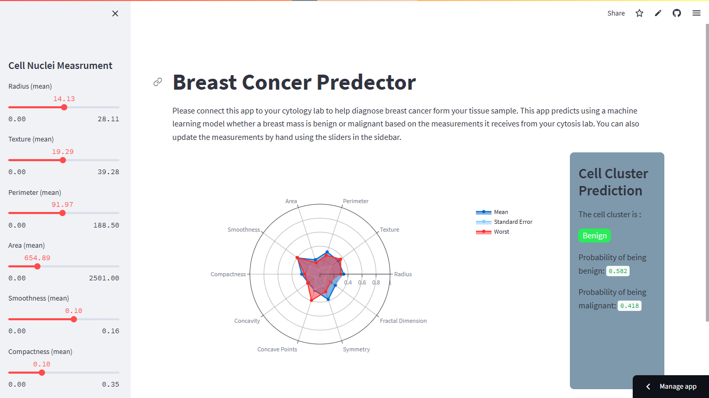

🩺 A machine learning-powered app designed to assist in diagnosing breast cancer by predicting whether a breast mass is benign or malignant. 🧬 Users can input measurements interactively, view probabilities, and compare values using radar charts 📊. Built for educational purposes 🎓, it showcases the application of machine learning techniques and is hosted live on Streamlit Community Cloud 🌐.

📄 A Python-based application enabling interactive querying of multiple PDF documents. Users can ask questions in natural language 💬, and the app provides accurate responses by analyzing the content of the PDFs. It leverages language models 🤖 for text embedding, similarity matching, and response generation, demonstrating advanced natural language processing techniques 🌟.
This project is a Streamlit app 🖥️ that allows users to generate high-quality blogs ✍️ based on specific topics, word count, and writing style. It leverages Llama 2 🤖, a powerful language model, to craft tailored content for job profiles such as Data Science, AI, and Researcher. The app prompts the user for a topic, preferred word count, and style, then generates a well-structured blog using the Llama model, providing a seamless way to create engaging articles quickly. Perfect for professionals looking for content creation automation!
📊 Analyzed 8 years of Bitcoin and Ethereum price data using advanced time-series techniques ⏳ like resampling, moving averages, and rolling windows. This approach uncovered key patterns, such as a 12% price increase trend in certain periods, and enabled the creation of a trading strategy 📈 that identified profitable buy and sell signals 💰. The analysis delivers valuable insights, empowering investors to make data-driven decisions in the volatile cryptocurrency market 🚀.
⚡ Developed a machine learning model to forecast hourly energy consumption, achieving an RMSE of 3753.6 MW 📉. By cleaning over 145,000 data points 🧹 and engineering key features like holidays and weekends 📅, I improved prediction accuracy. This model helps optimize resource allocation, reducing costs 💰 and ensuring energy grid reliability 🔋.

I designed an interactive Power BI dashboard 📊 by transforming raw bike rental data with SQL to uncover actionable insights for a rental business. The dashboard highlights key metrics, including $10M in revenue, 7.03M in profits, and a customer base of 2M riders 🚴, segmented into 81.81% registered users and 18.19% casual riders. By analyzing hourly, seasonal, and demographic trends, I identified peak revenue periods (e.g., midday and Fridays) and optimized decision-making. This project not only streamlined data interpretation but also provided a robust foundation for targeted marketing strategies and operational efficiency 🚀.

🎮 Analyzed data from over 44,000 players to study the impact of gate placement (gate_30 vs. gate_40) on user retention 📈. The findings revealed 44.82% 1-day retention for gate_30 and 44.23% for gate_40, while 7-day retention showed a statistically significant difference: 19.02% vs. 18.20% (p-value = 0.002). Insights from this analysis help optimize game design 🎯 for better long-term player engagement 🤝.